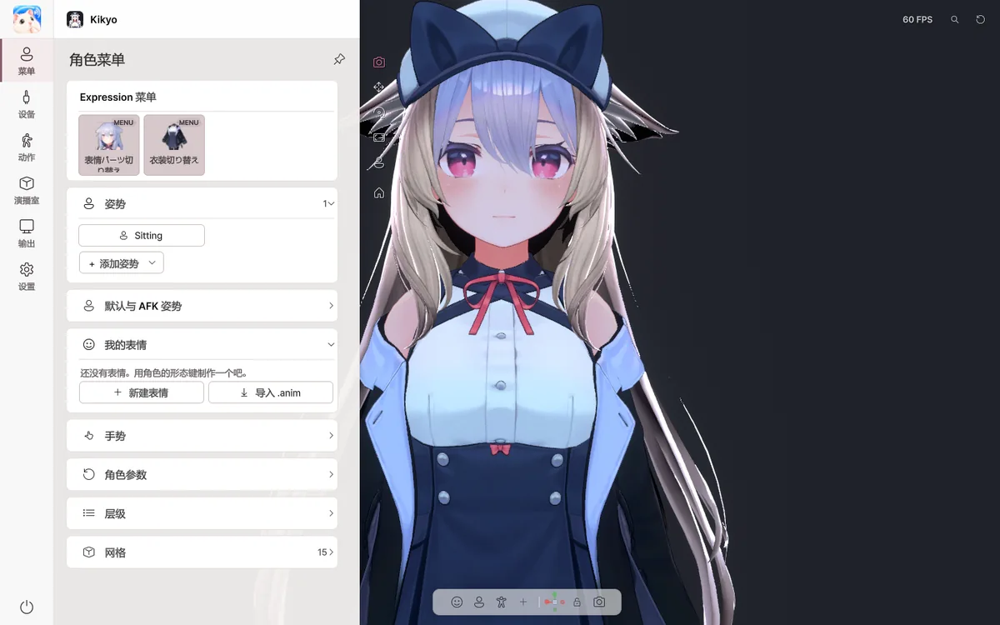

4. 主界面
v2.0.0 的主窗口始终是供编辑的场景视图。即使正在对外输出工作室摄像机，你仍然可以在主窗口内调整角色、灯光和道具，而不会自动改变观众看到的固定镜头。

左侧菜单对应的影响范围
| 菜单 | 这些设置会改变什么 |
|---|---|
| 菜单 | 当前角色的 Expression 菜单、服装开关、表情、手势。第5章 |
| 设备 | 摄像头、话筒、iPhone、追踪器对应的输入来源。第6章 |
| 动作 | 面部、眼睛、头、手臂、手指、身体、AFK 和口型。第7章 |
| 工作室 | 场景、人物位置、房间、灯光、摄像机和效果。第8章 |
| 输出 | Spout2、NDI、虚拟摄像机、屏幕共享、远程会话。第9章 |
| 设置 | 性能、窗口、快捷键、语言、文件和更新。第10章 |
使用设置面板右上角的固定图钉可以阻止面板在点击其他地方时关闭。鼠标指针在面板上方时，滚轮滚动设置；在面板外面时，滚轮一般改变场景视图的距离。若镜头意外放大，请检查指针位置。
场景视图与对外直播画面的区别
- 下方工具条或鼠标改变的是你用于编辑的视角。
- 输出工作室摄像机时，OBS/NDI 收到的是保存的独立镜头。即使你把编辑视角转到人物背后，观众的画面也不必跟着改变。
- 如果正在输出场景视图本身，你移动编辑镜头就会改变外部画面。请在工作室摄像机与输出中查看实际直播来源，并以 OBS 最终画面为准。
下方工具条的作用
- 脸部、上半身、全身快速改变选中角色与编辑镜头的距离。脸部适合检查表情，上半身适合聊天直播，全身适合姿势和舞蹈。
- + 保存视图记录当前的位置、方向与 FOV，以后点选可恢复相同构图。
- 锁定摄像机防止鼠标意外改变编辑视角，不会冻结角色的追踪动作，也不是工作室摄像机的目标锁定。
- 固定／自由／环绕决定鼠标操作编辑镜头的方式。环绕以角色为中心旋转，自由模式改变自由视线方向。这与工作室摄像机的位置和瞄准方法是两套设置。
- FOV 视野角减小时角色放大、背景减少；增大时可看到更多周边。鼠标速度增大时，相同的手部动作让镜头移动得更快。
- 工具条透明度只改变平时的显示外观（默认约 60%），悬停时可恢复明显显示。右键点击工具条空白处可以设置位置与透明度。
- 快捷动作让常用表情、动作和开关显示在底部。它们真正改变哪些参数取决于当前角色的菜单配置。
隐藏界面、复位与退出
在 Avatar Live 位于前台时，F1隐藏或恢复程序控制界面，它不是直播透明背景设置。复位适合在头发或尾巴的物理动作卡住时恢复状态。窗口的 X 根据设置可能退出或最小化到托盘，正在直播时托盘中的程序仍可能继续输出；如需彻底停止请选择退出。设置搜索可快速找到 AFK、视线、Spout2、快捷键等，不必逐一展开所有面板。